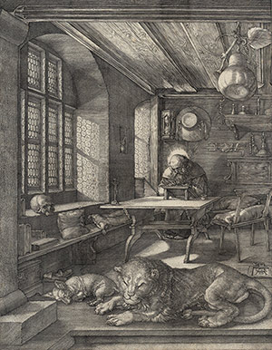
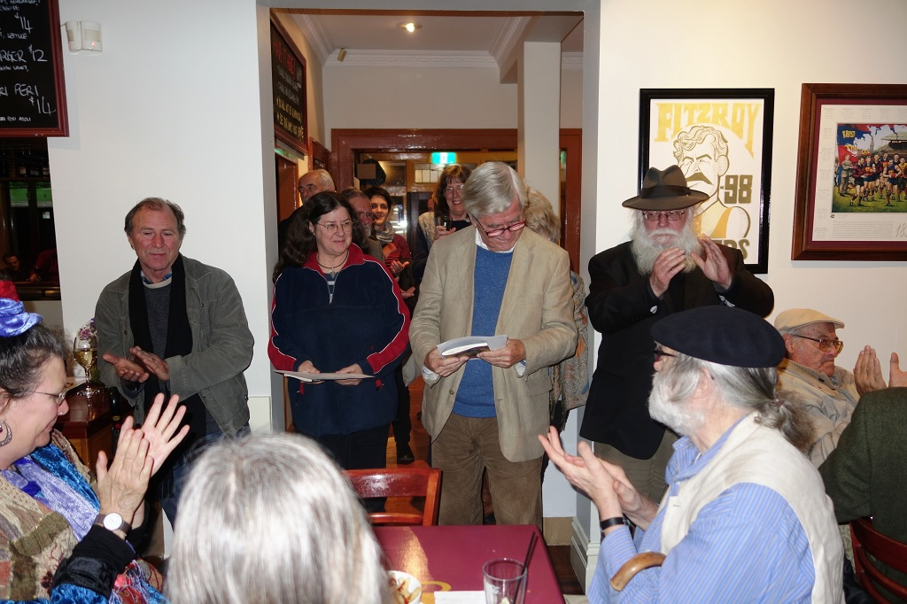

|
|


Chiaroscuro : Sandy Jeffs

{kind=link}
|
Book Description
I can recommend my therapist.
J. Alfred, go and see her and get back to me
when you’ve pulled yourself together.
You’ll find me with my girl friends
in a room walking to-and-fro
talking of Michelangelo.
J. Alfred, go and see her and get back to me
when you’ve pulled yourself together.
You’ll find me with my girl friends
in a room walking to-and-fro
talking of Michelangelo.
The world is a place full of dark and light as is that of Sandy Jeffs. She explores this tension with a clarity that is troubled by shadows. Humour and sadness intermingle in a show that must go on. Popular culture and parodies of classic poems are used to illuminate the world for what it is. St Jerome in his study prepares a reader’s report on the Bible. Clancy is contacted at theoverflow. com.au.
Celebrity and the economic market are equally dismantled in poems that examine the absurdity and cravenness of their power. She feels how we are compromised by our own selfishness when we make a Sophie’s choice to buy a book of Rilke’s poems rather than a copy of Big Issue from a homeless vendor. She breaks out from her own darkness and light, her personal chiaroscuro, to reveal a poet with a keen sense of observation and a soft sensitivity. It allows her to bring a bristling anger to bear on social injustice. Chiaroscuro shows her to be homeward bound to sacred ground.
Jeffs’ poetry gives the
frustrated and often unheard pleas for understanding from the mentally
ill a new, clearer and poignantly beautiful voice.
Samantha Ryan, Entopy
Cover design: Gail Hannah
Cover painting: My Mad Friend,
Veronica Holland
ISBN 9781876044817
Published 2015
90 pages
$23.00
Book Sample
| Chiaroscuro I am a carnival a rollicking sideshow a circus the life and soul while in the house of mirrors a bewildered face illuminated by darkness and shrouded in light peers back at me with untwinkling eyes but outside and inside the show must go on.  Dürer’s St Jerome in his Study I’m sitting here in my study having been given the job to edit a work of fiction by a new author variously called God, Yahweh and Jehovah. Its title, The Bible, is most uninspiring. Who on earth is going to buy a book called that? As it reads it’s very patchy the style is archaic and at times melodramatic it labours the point and is littered with multiple redundancies. The story itself seems to contain a lot of inconsistencies and fanciful notions. I know you will say what does it matter if it’s only a work of fiction? But really, it has to be credible. I mean, some of the ideas stretch the imagination— a virgin birth a resurrection a father, son and ghost being the same person a garden in paradise with magical trees and a talking snake tempting a woman with an apple commandments on a tablet given to an old man on a mountain and parting seas— all laughably ludicrous miracles. The book is riddled with this sort of nonsense. Disturbingly there is a misogynistic and homophobic posture running through the text. The hero in the New Testament is thinly drawn and too idealistic to be believable frankly, he’s overly bland and just isn’t inspiring enough to keep the reader’s interest. The author was clearly too involved with his hero and unable to write with an objective eye. As for the last book, The Revelation well, what can I say, it is totally over the top full of hyperbole and rhetorical overkill peppered with outrageous prophecies and scaremongering. It is overtly anti-Semitic lacks subtlety and is drenched in flamboyant hate. The author’s lust for revenge is very disconcerting. I do worry about his mental state and wonder if he needs to see a psychiatrist. I’d strongly advise omitting this book as it compromises the integrity of the whole work. (Perhaps he could rewrite The Revelation as a thriller?) For the rest I would suggest a major rewrite to make it a more coherent narrative before it could even be considered for publication. To be honest, in my humble opinion I think The Bible is beyond salvaging even with my considerable editing skills. I cannot recommend it. I simply can’t see it being a bestseller. Clancy@theoverflow.com.au I had written him a letter, which I had for want of better Knowledge,
sent to where I met him at a conference years ago.
He was networking when I met him, so I sent an email to himJust ‘on spec’
addressed as follows, Clancy@theoverflow.com.au
And a reply came as directed in a font quite unexpected, (The Epson
printed the email like a thumb-nail dipped in tar)
’Twas his secretary who wrote it, and verbatim I will quote it:‘Clancy’s gone
to some retreat and we don’t know where he are.’
In my wild psychotic fancy visions come to me of Clancy Gone a-seeking
mindful healing where the businessmen do go;
While the money signs are flashing, Clancy rides the wave a-dashingFor
businessmen have pleasures that the poor folk never know.
And the market has friends to meet him, and their shrill voices greet him With the
flurry of the floor and the hum of printers in the air,
And he sees a printout splendid of his bank balance extended,And the wealth
to reap from the everlasting share.
I am sitting in my dingy little room, where a stingy Ray of
sunlight struggles through the smog-choked cloying air,
And the fetid air pollution and the threat of revolution,Through the
open window floating sends despair.
And in place of flowing prattle, I can hear the fiendish rattle Of tanks and
guns and buses making hurry down the street,
And the language uninviting of the politicians’ fightingComes fitfully
and ceaselessly every time they meet.
And the crowded streets they daunt me, and the pallid faces haunt me As they push
and shove to beat the long bank queues,
With their soulless eyes and greed and their never ending need,These
townsfolk never see the changing hues.
And I somehow rather fancy that I’d like to change with Clancy, To take a turn
at playing on the stock exchange,
While he faced a life infernal of menial work eternal—But I doubt
he’d last a minute, Clancy@theoverflow.com.au
|
{kind=link}
Book Launch

Launched by CHRIS WALLACE-CRABBE
Tuesday Evening 2nd June 2015
NORTH FITZROY ARMS
Sandy Jeffs:
Interview and reading, Writer's Radio on Radio Adelaide June 27th 2015. The interviewer was Cath Kenneally
Reviews
Chiaroscuro
Michael Farrell, The Australian
6 February 2016
It’s not likely that all the poems in a book will appeal to any reader: books that try to please all may end up pleasing none. One poem can make a book worthwhile. In Sandy Jeffs’s The Mad Poet’s Tea Party (Spinifex, 84pp, $19.95), it is Therapy: Prices Update, a simple list poem where a “Hello” once cost $10 and now costs $30; “What seems to be the problem?” was once a $40 question and is now $140; while “Get in touch with your inner child” was once relatively cheap advice at $100, but is now $360.
A potentially great list poem gone begging is that of the reviews of The Sanity App (we only get two). For the small audience poetry books attract, it is a wonder most publishers aim at a general one. Why not poetry books for people with mental illness, or Chinese students, or lawyers? There must be thousands of each at least.
Jeffs’s book, for example, might be appreciated by those who suffer from mental illness but who are not readers of poetry in general. The subject is clearly a highly generative one for Jeffs and the poems produce the occasional “mad” good line: “I thought I was a sunrise / then discovered I was a sunset” and, better, “The loose roos are raising my roof / it’s their party time / they’re hanging me out to dry / but I’m hanging tough even though / I’m on a slippery slope to nowhere / Because I keep missing the bus”, from the title poem. This poem stands out for its undoing of cliches about madness, and about life: “the world has been taken out of my oyster”. This would seem a bit too wrenching as a poem ending, but occurring within this poem’s cascade of imagery, it is a catching piece of pathos. The poem asks a question — recalling the flies of Catch 22 — pertinent to many poets: “is my mind’s eye too vivid or too clouded / are there too many butterflies in it”.
The observations and jokes are often obvious and sometimes strained, but there’s an admirable persistence and lightness here nevertheless. All poetry that deals with the everyday risks being too ordinary or not ordinary enough: Jeffs’s ordinary, as presented, can often be extreme, as in McMadness: “Have you spent all your savings / and bought three new Ferraris and a Rolls lately / and slept with every Tom, Dick and Jane?”
Jeffs signals her reading — or constructs a sympathetic network — with epigraphs from local and famous writers that largely just seem a thematic gesture: her quote from Tennessee Williams on the “kindness of strangers” is an “ouch” moment, however: the poem is about being taken to a psych ward. There is also the wryness attached to knowing who is the present Prime Minister.
Jeffs has published two books recently. The second, Chiaroscuro (Black Pepper, 90pp, $23), appears more subdued than Mad Poet’s Tea Party. This may be partly the effect of a different font and paper stock. Jeffs’s framing of madness for narrator or protagonist allows for extreme statements. Not just of the buying-cars kind quoted above, but statements such as these from Detachment: “She is as detached from the world as the Buddha”, and, in reference to Plath, “Sylvia’s suicide / was her last great poem / it cemented the legend”. Neither is aggrandising, but they are not convincing either.
Lines such as “I am in Rilke’s great song / I am in Kafka’s burrow” read like typical poetic hyperbole, whereas “I am a bulging reservoir of churning waters” (because less flattering) and “Words are chasing me through the shadows” (because less self-centred) are more compelling (The Hour is Striking). There is a nice dialogue in Jeffs’s poems between global and local culture: her narrator is not just Rilke or Plath, but “Hewett … Slessor … Harwood” (Finding Voice), and her celebrities are not just Brad and Angelina but Bert and Patti and Angela Bishop (I Want to be a Celebrity). There’s a “mad” pay-off for this poem: “& if I can’t be a celebrity / I’ll just stalk one!” Yet it, and Clancy@theoverflow.com.au, which updates Banjo Paterson, could have been pithier.
Her narrators exist on a broad spectrum, encompassing, for example, the stockbroker and the shopaholic. This affects satirical mode: the extremes of the former are represented caustically, while the latter is more arch, producing hyperbole edging into hysteria (The Greed¬ocracy; The Shopocratic Oath). A few poems address what kind of poet the narrator is, and whether they “cut the poetry mustard” (Poetic Licence #2). It’s clear poetry is Jeffs’s world; it permeates ordinary human existence, doing its best to withstand insanity and capitalism.
Michael Farrell is a poet and critic.
Michael Farrell, The Australian
6 February 2016
It’s not likely that all the poems in a book will appeal to any reader: books that try to please all may end up pleasing none. One poem can make a book worthwhile. In Sandy Jeffs’s The Mad Poet’s Tea Party (Spinifex, 84pp, $19.95), it is Therapy: Prices Update, a simple list poem where a “Hello” once cost $10 and now costs $30; “What seems to be the problem?” was once a $40 question and is now $140; while “Get in touch with your inner child” was once relatively cheap advice at $100, but is now $360.
A potentially great list poem gone begging is that of the reviews of The Sanity App (we only get two). For the small audience poetry books attract, it is a wonder most publishers aim at a general one. Why not poetry books for people with mental illness, or Chinese students, or lawyers? There must be thousands of each at least.
Jeffs’s book, for example, might be appreciated by those who suffer from mental illness but who are not readers of poetry in general. The subject is clearly a highly generative one for Jeffs and the poems produce the occasional “mad” good line: “I thought I was a sunrise / then discovered I was a sunset” and, better, “The loose roos are raising my roof / it’s their party time / they’re hanging me out to dry / but I’m hanging tough even though / I’m on a slippery slope to nowhere / Because I keep missing the bus”, from the title poem. This poem stands out for its undoing of cliches about madness, and about life: “the world has been taken out of my oyster”. This would seem a bit too wrenching as a poem ending, but occurring within this poem’s cascade of imagery, it is a catching piece of pathos. The poem asks a question — recalling the flies of Catch 22 — pertinent to many poets: “is my mind’s eye too vivid or too clouded / are there too many butterflies in it”.
The observations and jokes are often obvious and sometimes strained, but there’s an admirable persistence and lightness here nevertheless. All poetry that deals with the everyday risks being too ordinary or not ordinary enough: Jeffs’s ordinary, as presented, can often be extreme, as in McMadness: “Have you spent all your savings / and bought three new Ferraris and a Rolls lately / and slept with every Tom, Dick and Jane?”
Jeffs signals her reading — or constructs a sympathetic network — with epigraphs from local and famous writers that largely just seem a thematic gesture: her quote from Tennessee Williams on the “kindness of strangers” is an “ouch” moment, however: the poem is about being taken to a psych ward. There is also the wryness attached to knowing who is the present Prime Minister.
Jeffs has published two books recently. The second, Chiaroscuro (Black Pepper, 90pp, $23), appears more subdued than Mad Poet’s Tea Party. This may be partly the effect of a different font and paper stock. Jeffs’s framing of madness for narrator or protagonist allows for extreme statements. Not just of the buying-cars kind quoted above, but statements such as these from Detachment: “She is as detached from the world as the Buddha”, and, in reference to Plath, “Sylvia’s suicide / was her last great poem / it cemented the legend”. Neither is aggrandising, but they are not convincing either.
Lines such as “I am in Rilke’s great song / I am in Kafka’s burrow” read like typical poetic hyperbole, whereas “I am a bulging reservoir of churning waters” (because less flattering) and “Words are chasing me through the shadows” (because less self-centred) are more compelling (The Hour is Striking). There is a nice dialogue in Jeffs’s poems between global and local culture: her narrator is not just Rilke or Plath, but “Hewett … Slessor … Harwood” (Finding Voice), and her celebrities are not just Brad and Angelina but Bert and Patti and Angela Bishop (I Want to be a Celebrity). There’s a “mad” pay-off for this poem: “& if I can’t be a celebrity / I’ll just stalk one!” Yet it, and Clancy@theoverflow.com.au, which updates Banjo Paterson, could have been pithier.
Her narrators exist on a broad spectrum, encompassing, for example, the stockbroker and the shopaholic. This affects satirical mode: the extremes of the former are represented caustically, while the latter is more arch, producing hyperbole edging into hysteria (The Greed¬ocracy; The Shopocratic Oath). A few poems address what kind of poet the narrator is, and whether they “cut the poetry mustard” (Poetic Licence #2). It’s clear poetry is Jeffs’s world; it permeates ordinary human existence, doing its best to withstand insanity and capitalism.
Michael Farrell is a poet and critic.
Chiaroscuro
Jean Taylor, Wurundjeri Country Melbourne
3 August 2015
To have two poetry books published and launched in Melbourne by two different publishers within days of each other, Chiaroscuro by Chris Wallace-Crabb at the Fitzroy Arms Hotel on 2 June 2015 and The Mad Poet’s Tea Party byJennifer Harrison at the Christmas Hills Mechanics Institute Hall on 11 June, is no mean feat. But then the poet, Sandy Jeffs, is no ordinary poet. Diagnosed with schizophrenia during the 1970s Sandy has had to learn to live with this debilitating and mind-altering disease for almost 40 years, an almost impossible task but one she has managed with aplomb and with her sense of humour intact.
One of the mitigating features of her compromised life was the fact that Sandy wrote poetry and it was after her first book of poems, Poems From the Madhouse, was published by Spinifex Press in 1993 to critical acclaim that Sandy realised that she finally had a purpose in life as a recognised poet and also as an advocate and a public face for people living with mental illness.
These are books seven and eight of Sandy’s output to date and as with the previous books being mad, a ‘loony, loopy, schizy’, to use Sandy’s terminology, is the central theme of the poems in The Mad Poet’s Tea Party. She writes about her fears and her feelings of despair in The Dark Hours (p 19): ‘I spend too much time in these hours / my mind darkens in to them / a long creep down a deep weeping wound / where I know myself too well’. She likens the ways in which madness manifests itself in her head to an on-going conflict in Waging War (p 15): ‘This is not the war to end all wars. / A mind wages perpetual war - against itself.’ And even the every day ordinariness of madness in The madwoman in This Poem (p 1): ‘The madwoman in this poem / is everywoman / is any woman / is a mother, daughter / sister, lover, friends - / the madwoman in this poem - / is me.’
And yet, and at the same time, Sandy is able to step back, to recognise the humour in the bleakest of situations as in Occupy My Mind (p 25), ‘it is occupied by / Jesus, Judas, God, Satan / Tweedledum and Tweedledee / my mind if a full house / I’ve hung out the ‘no vacancy’ sign.’ It is perhaps essential to make fun of the medical profession in a reproving fashion in Therapy: Prices Update (p 27): Hello! $10 $30 / Sit down $20 $70 / How are you? $30 $110.’ And especially to make fun of madness itself as in Downsizing (p 60): ‘I’m downsizing my mind / in preparation for the new year’. This is also true of Done to Death (p 66): ‘I’m a little concerned / I’ve done madness to death / and I’m casting around for another subject / to engage my interest’
And yet, ultimately, we are left with no illusions in Housemate (p59): ‘I live with schizophrenia / and all her moods / she is the housemate from hell.’
Madness is also the subject of many of the poems in Chiaroscuro, how not to be in this book whose very title means the strong artistic contrast between light and dark. However here, the darkness is not quite so terrifying: Splintering (p 6): ‘I am splintering in winter barrenness’ and Lifequake (p 25): ‘A life is quaking / tectonic plates are shifting’ and again Someone Else (p 60) ‘Perhaps I could climb into someone else’s mind / hear someone else’s voices / have someone else’s delusions’, which are all about madness in a different key to the sometimes desperation in the other book.
Not only that, the majority of these poems are laugh out loud funny and some have an underlying political meaning that is criticising, and understandably so, the status quo. The best of these include poems that take down the sacred literati. Such as Hermione Beecham-Smith Counsels J Alfred Prufrock (p 17): ‘J Alfred, you can’t go on like this / you need therapy... Who cares if you are growing old / and balding ... I can recommend my therapist / J Alfred, go and see her and get back to me ... You’ll find me with my girlfriends / in a room walking to and fro / talking of Michelangelo.’
Then there’s Durer’s St Jerome in his Study who is editing a book of fiction (p 18): ‘It’s title, The Bible, is most uninspiring. / Who on earth is going to buy a book called that?’ This is accompanied by the black and white illustration of the same name to emphasise the point. In fact, the only other illustration on page 33 is equally serious in contrast to the poem that accompanies it.
And taking one of Australia’s iconic poems on which to hang her critical humour in Clancy@the overflow.com.au (p 43), Sandy gives us an altogether different perspective on mateship in the bush: ‘and a reply came as directed in a font quite unexpected, / (The Epson printed the email like a thumb-nail dipped in tar) / ‘Twas his secretary who wrote it, and verbatim I will quote it: / ‘Clancy’s gone to some retreat and we don’t know where he are.’ '
The much darker poem, Daddy, What Did YOU Do in the Great War? (p 33), reveals Sandy’s political intelligence as The Sergeant, whose job it is to turn army recruits into killing machines, replies: ‘made them drink semen / chucked them into a shower / and scrubbed them with a wire brush / rubbed their dicks and balls and arse with boot polish / sodomised a young bloke’ with the inevitable consequences as the The Recruit answers the same question (p 34): ‘I gave the sheila recruits a hard time... and ya gotta let the shitheads know who’s boss / so I raped a few of their women / it’s what happens in war’
Mention must also be made of the eye-catching covers. The cover painting on the Black Pepper book is My Mad Friend by Veronica Holland, a colourful styalised picture of Sandy with her long hair flying as she plays the violin surrounded by everything she holds dear, cats, books, friends, a circus tent, trees, a magpie and green rolling hills with the monster breathing fire held at bay in the far corner. The Spinifex book has Charles Blackman’s painting Feet Beneath the Table on the front with a wary looking Alice at the unstable tea table and more feet under the table than seems possible.
In the interest of full disclosure I was also there when Sandy’s first book Poems From the Madhouse, (Spinifex Press, Melbourne, 1993, 1997, 1998, 1999, 2000) was launched by Judith Rodrguez at Bromham Place Clubhouse in Richmond on 19 June 1993 and wrote a review of it for Lesbian Network no 37 September 1993. And likewise when Sandy’s autobiography, Flying With Paper Wings: Reflections on Living With Madness, (The Vulgar Press, North Carlton, 2009) was launched by Christos Tsiolkos at Dantes in Gertrude Street on 17 October 2009 I reviewed it for LOTL on-line in February 2010 and also included the review in Stroppy Dykes (2012).
In other words, Sandy is one of my all-time favourite poets and I admire her talent and courage immensely. For as Sandy puts it in Dangling (p 20) ‘we dangle from a thread of sanity // while madness snaps at our heels’, but it hasn’t stopped her from offering us the very best of herself and we are the richer for her persistence over the years.
To read more of Sandy’s work: she also coauthored Loose Kangaroos (Domain Press, Melbourne, 1998), and wrote Blood Relations, (Spinifex Press, Melbourne, 2000), Confessions of a Midweek Lady: Tall Tennis Tales (Overthefence Press, Melbourne, 2001, 2009) and The Wings of Angels: A Memoir of Madness (Spinifex Press, Melbourne, 2004)
Jean Taylor, Wurundjeri Country Melbourne
3 August 2015
To have two poetry books published and launched in Melbourne by two different publishers within days of each other, Chiaroscuro by Chris Wallace-Crabb at the Fitzroy Arms Hotel on 2 June 2015 and The Mad Poet’s Tea Party byJennifer Harrison at the Christmas Hills Mechanics Institute Hall on 11 June, is no mean feat. But then the poet, Sandy Jeffs, is no ordinary poet. Diagnosed with schizophrenia during the 1970s Sandy has had to learn to live with this debilitating and mind-altering disease for almost 40 years, an almost impossible task but one she has managed with aplomb and with her sense of humour intact.
One of the mitigating features of her compromised life was the fact that Sandy wrote poetry and it was after her first book of poems, Poems From the Madhouse, was published by Spinifex Press in 1993 to critical acclaim that Sandy realised that she finally had a purpose in life as a recognised poet and also as an advocate and a public face for people living with mental illness.
These are books seven and eight of Sandy’s output to date and as with the previous books being mad, a ‘loony, loopy, schizy’, to use Sandy’s terminology, is the central theme of the poems in The Mad Poet’s Tea Party. She writes about her fears and her feelings of despair in The Dark Hours (p 19): ‘I spend too much time in these hours / my mind darkens in to them / a long creep down a deep weeping wound / where I know myself too well’. She likens the ways in which madness manifests itself in her head to an on-going conflict in Waging War (p 15): ‘This is not the war to end all wars. / A mind wages perpetual war - against itself.’ And even the every day ordinariness of madness in The madwoman in This Poem (p 1): ‘The madwoman in this poem / is everywoman / is any woman / is a mother, daughter / sister, lover, friends - / the madwoman in this poem - / is me.’
And yet, and at the same time, Sandy is able to step back, to recognise the humour in the bleakest of situations as in Occupy My Mind (p 25), ‘it is occupied by / Jesus, Judas, God, Satan / Tweedledum and Tweedledee / my mind if a full house / I’ve hung out the ‘no vacancy’ sign.’ It is perhaps essential to make fun of the medical profession in a reproving fashion in Therapy: Prices Update (p 27): Hello! $10 $30 / Sit down $20 $70 / How are you? $30 $110.’ And especially to make fun of madness itself as in Downsizing (p 60): ‘I’m downsizing my mind / in preparation for the new year’. This is also true of Done to Death (p 66): ‘I’m a little concerned / I’ve done madness to death / and I’m casting around for another subject / to engage my interest’
And yet, ultimately, we are left with no illusions in Housemate (p59): ‘I live with schizophrenia / and all her moods / she is the housemate from hell.’
Madness is also the subject of many of the poems in Chiaroscuro, how not to be in this book whose very title means the strong artistic contrast between light and dark. However here, the darkness is not quite so terrifying: Splintering (p 6): ‘I am splintering in winter barrenness’ and Lifequake (p 25): ‘A life is quaking / tectonic plates are shifting’ and again Someone Else (p 60) ‘Perhaps I could climb into someone else’s mind / hear someone else’s voices / have someone else’s delusions’, which are all about madness in a different key to the sometimes desperation in the other book.
Not only that, the majority of these poems are laugh out loud funny and some have an underlying political meaning that is criticising, and understandably so, the status quo. The best of these include poems that take down the sacred literati. Such as Hermione Beecham-Smith Counsels J Alfred Prufrock (p 17): ‘J Alfred, you can’t go on like this / you need therapy... Who cares if you are growing old / and balding ... I can recommend my therapist / J Alfred, go and see her and get back to me ... You’ll find me with my girlfriends / in a room walking to and fro / talking of Michelangelo.’
Then there’s Durer’s St Jerome in his Study who is editing a book of fiction (p 18): ‘It’s title, The Bible, is most uninspiring. / Who on earth is going to buy a book called that?’ This is accompanied by the black and white illustration of the same name to emphasise the point. In fact, the only other illustration on page 33 is equally serious in contrast to the poem that accompanies it.
And taking one of Australia’s iconic poems on which to hang her critical humour in Clancy@the overflow.com.au (p 43), Sandy gives us an altogether different perspective on mateship in the bush: ‘and a reply came as directed in a font quite unexpected, / (The Epson printed the email like a thumb-nail dipped in tar) / ‘Twas his secretary who wrote it, and verbatim I will quote it: / ‘Clancy’s gone to some retreat and we don’t know where he are.’ '
The much darker poem, Daddy, What Did YOU Do in the Great War? (p 33), reveals Sandy’s political intelligence as The Sergeant, whose job it is to turn army recruits into killing machines, replies: ‘made them drink semen / chucked them into a shower / and scrubbed them with a wire brush / rubbed their dicks and balls and arse with boot polish / sodomised a young bloke’ with the inevitable consequences as the The Recruit answers the same question (p 34): ‘I gave the sheila recruits a hard time... and ya gotta let the shitheads know who’s boss / so I raped a few of their women / it’s what happens in war’
Mention must also be made of the eye-catching covers. The cover painting on the Black Pepper book is My Mad Friend by Veronica Holland, a colourful styalised picture of Sandy with her long hair flying as she plays the violin surrounded by everything she holds dear, cats, books, friends, a circus tent, trees, a magpie and green rolling hills with the monster breathing fire held at bay in the far corner. The Spinifex book has Charles Blackman’s painting Feet Beneath the Table on the front with a wary looking Alice at the unstable tea table and more feet under the table than seems possible.
In the interest of full disclosure I was also there when Sandy’s first book Poems From the Madhouse, (Spinifex Press, Melbourne, 1993, 1997, 1998, 1999, 2000) was launched by Judith Rodrguez at Bromham Place Clubhouse in Richmond on 19 June 1993 and wrote a review of it for Lesbian Network no 37 September 1993. And likewise when Sandy’s autobiography, Flying With Paper Wings: Reflections on Living With Madness, (The Vulgar Press, North Carlton, 2009) was launched by Christos Tsiolkos at Dantes in Gertrude Street on 17 October 2009 I reviewed it for LOTL on-line in February 2010 and also included the review in Stroppy Dykes (2012).
In other words, Sandy is one of my all-time favourite poets and I admire her talent and courage immensely. For as Sandy puts it in Dangling (p 20) ‘we dangle from a thread of sanity // while madness snaps at our heels’, but it hasn’t stopped her from offering us the very best of herself and we are the richer for her persistence over the years.
To read more of Sandy’s work: she also coauthored Loose Kangaroos (Domain Press, Melbourne, 1998), and wrote Blood Relations, (Spinifex Press, Melbourne, 2000), Confessions of a Midweek Lady: Tall Tennis Tales (Overthefence Press, Melbourne, 2001, 2009) and The Wings of Angels: A Memoir of Madness (Spinifex Press, Melbourne, 2004)
Chiaroscuro
Geoff Page
The Sydney Morning Herald, 13 August 2015
Writer/poet Sandy Jeffs. Photo: Cathryn Tremain
Over six collections and a memoir, Melbourne poet Sandy Jeffs, has developed a considerable track record as an "insider" spokesperson for the mentally ill. She has battled schizophrenia and other disorders since 1976, From 1994, with her first book, Poems from the Madhouse, Jeffs has used poetry to provide a graphic insight into her situation and that of thousands of others enduring comparable problems.
Technically, Sandy Jeffs in The Mad Poet's Tea Party, is no Sylvia Plath but her skills are more than adequate to the task at hand, especially in longer poems such as
"Congratulations","McMadness " and "The Sanity App" where she satirises the seemingly limitless limitations of the psychiatric establishment. In "Medicated", Jeffs sardonically converts the names of her 21 successive or simultaneous medications into verbs. Hence lines such as: "when I was Risperidoned I lactated like a cow" and "I was Lithiumed and Epilimed to even my pendulum / I've been Imipramined, Prothiadened, Lexaproed / Effexored and Zolofted to happiness ..."
In case readers think this is making too light of the situation, there are other poems, such as "Crouching Tiger", which give a more than unsettling vision of what the voices of schizophrenia are actually like: "The crouching tiger / and hidden dragon have come / once more to mock me. / Sniggering as they taunt me / they smear me with their insults." "Why can't you hear them?" she quite reasonably asks in her next poem, "Vampire".
In "Done to Death" Jeffs admits that "I'm a little concerned / I've done madness to death / and I'm casting around for another subject / to engage my interest / but I am madness / and madness is me ..." Readers might suspect that, as a poet, it would indeed be better for Jeffs if she were able to find "another subject" but, having read The Mad Poet's Tea Party, they might be perversely glad she hasn't.
Surprisingly then, and perhaps as a warning to be careful what one wishes for, Jeffs has issued, within the year and with another publisher, a collection where she does indeed range far more widely in manner and subject matter.
In Chiaroscuro, Jeffs comes out of the ward, as it were, and writes about a number of issues, only a few of which directly relate to mental illness. They include sardonic takes on information technology, the bible, celebrity culture, consumerism etc. The risk here is that the poet may drift from her immediate and hard-won expertise into a more general competition with other poets who also write copiously on these issues. Sometimes the comic touch that serves Jeffs so well in The Mad Poet's Tea Party transfers successfully to these new concerns. At other times her targets seem a bit too well-peppered already.
Among the more memorable poems in Chiaroscuro, however, are ones such as "The Big Issue", where the poet wrestles with a deeply-felt moral conflict, and "Hermione Beecham-Smith Counsels J. Alfred Prufrock", a parody in which Jeffs not only satirises the eternally self-pitying Prufrock but also the "counselling" industry with which she herself is only too familiar. As Hermione says towards the end of the poem, "I can recommend my therapist. / J. Alfred, go and see her and get back to me / when you've pulled yourself together". It's also a passing put-down on those who believe, as almost everyone did once, that the depressive need only "pull himself together" to recover. The poem also ends with a clever touch. "You'll find me with my girl friends / in a room walking to-and-fro / talking of Michelangelo."
It's important to note, however, that Jeffs still has quite a deal to offer on her original subject in Chiaroscuro. Her four-line poem, "Soul Searching", demonstrates, for instance, that schizophrenia is not something easily escaped from: "I took my soul to the bathroom / to clean away the dread / found a Skinhead in my bones / and a Nazi in my head."
Both Chiaroscuro and The Mad Poet's Tea Party are important reading for anyone concerned, however tangentially, with mental illness. Indeed, the collections are almost bipolar in the way they veer, unpredictably, from the seriously disturbing to the uproariously comic.
Geoff Page
The Sydney Morning Herald, 13 August 2015
Writer/poet Sandy Jeffs. Photo: Cathryn Tremain
Over six collections and a memoir, Melbourne poet Sandy Jeffs, has developed a considerable track record as an "insider" spokesperson for the mentally ill. She has battled schizophrenia and other disorders since 1976, From 1994, with her first book, Poems from the Madhouse, Jeffs has used poetry to provide a graphic insight into her situation and that of thousands of others enduring comparable problems.
Technically, Sandy Jeffs in The Mad Poet's Tea Party, is no Sylvia Plath but her skills are more than adequate to the task at hand, especially in longer poems such as
"Congratulations","McMadness " and "The Sanity App" where she satirises the seemingly limitless limitations of the psychiatric establishment. In "Medicated", Jeffs sardonically converts the names of her 21 successive or simultaneous medications into verbs. Hence lines such as: "when I was Risperidoned I lactated like a cow" and "I was Lithiumed and Epilimed to even my pendulum / I've been Imipramined, Prothiadened, Lexaproed / Effexored and Zolofted to happiness ..."
In case readers think this is making too light of the situation, there are other poems, such as "Crouching Tiger", which give a more than unsettling vision of what the voices of schizophrenia are actually like: "The crouching tiger / and hidden dragon have come / once more to mock me. / Sniggering as they taunt me / they smear me with their insults." "Why can't you hear them?" she quite reasonably asks in her next poem, "Vampire".
In "Done to Death" Jeffs admits that "I'm a little concerned / I've done madness to death / and I'm casting around for another subject / to engage my interest / but I am madness / and madness is me ..." Readers might suspect that, as a poet, it would indeed be better for Jeffs if she were able to find "another subject" but, having read The Mad Poet's Tea Party, they might be perversely glad she hasn't.
Surprisingly then, and perhaps as a warning to be careful what one wishes for, Jeffs has issued, within the year and with another publisher, a collection where she does indeed range far more widely in manner and subject matter.
In Chiaroscuro, Jeffs comes out of the ward, as it were, and writes about a number of issues, only a few of which directly relate to mental illness. They include sardonic takes on information technology, the bible, celebrity culture, consumerism etc. The risk here is that the poet may drift from her immediate and hard-won expertise into a more general competition with other poets who also write copiously on these issues. Sometimes the comic touch that serves Jeffs so well in The Mad Poet's Tea Party transfers successfully to these new concerns. At other times her targets seem a bit too well-peppered already.
Among the more memorable poems in Chiaroscuro, however, are ones such as "The Big Issue", where the poet wrestles with a deeply-felt moral conflict, and "Hermione Beecham-Smith Counsels J. Alfred Prufrock", a parody in which Jeffs not only satirises the eternally self-pitying Prufrock but also the "counselling" industry with which she herself is only too familiar. As Hermione says towards the end of the poem, "I can recommend my therapist. / J. Alfred, go and see her and get back to me / when you've pulled yourself together". It's also a passing put-down on those who believe, as almost everyone did once, that the depressive need only "pull himself together" to recover. The poem also ends with a clever touch. "You'll find me with my girl friends / in a room walking to-and-fro / talking of Michelangelo."
It's important to note, however, that Jeffs still has quite a deal to offer on her original subject in Chiaroscuro. Her four-line poem, "Soul Searching", demonstrates, for instance, that schizophrenia is not something easily escaped from: "I took my soul to the bathroom / to clean away the dread / found a Skinhead in my bones / and a Nazi in my head."
Both Chiaroscuro and The Mad Poet's Tea Party are important reading for anyone concerned, however tangentially, with mental illness. Indeed, the collections are almost bipolar in the way they veer, unpredictably, from the seriously disturbing to the uproariously comic.
In her poem ‘The
suicides’, Janet Frame
writes: ‘know they died because words they had spoken/ returned always
homeless to them’. Perhaps more deaths could be prevented if people
were able to speak without fear of being shamed or ostracised, knowing
that their words might lodge in someone’s mind or heart, and that
language, if wrestled with, could offer healing.
Poetry – confessional poetry in particular – offers a safe forum for the frank translation and exploration of mental illness, as spearheaded by American poets of the sixties such as Anne Sexton and Robert Lowell. In Australia, Francis Webb, Bruce Beaver and Kate Jennings, to name a few, furthered the style. One thinks of Webb’s sequence ‘Ward Two’, intimately detailing his and inmates’ lives, and Beaver’s ‘Letters to Live Poets’, unflinching in its capturing of both inner and outer processes of madness.
Sandy Jeffs is a Victorian poet writing within this lineage, whose first collection, 1993’s ‘Poems from the madhouse’ (which won the Anne Elder Award’s second prize and a Human Rights award), aimed to give the reader direct insight into the florid thought patterns of a schizophrenic mind, forgoing the restraint of Webb and Beaver for a rambling transfusion of desperate words, and utilising startling, grandiose imagery. It is the struggle to convey her illness through a slippery lexicon that sets the groundwork for later poems. Her second book, ‘Blood relations’, published in 2000, saw Jeffs tackle her traumatic childhood, moving from mind to past. She invites us to see the connection between the two, as she recreates the pain of domestic violence. Despite the horrors, she remained hopeful, feeling strength in knowing ‘that was then’, moving forward by exorcising such demons through poetry.
In her latest collection, Chiaroscuro, Jeffs is notably restrained and deliberate in her choice of words, indicating that she has become comfortable with language. The title refers to the use of contrasts between light and dark, and she conveys this continuing, if less horrific, struggle in the title poem:
She implies that you will uncover her true self through her more sombre words, which will ‘illuminate’ her, rather than through the mask of happiness she may wear outside of her writing. Jeffs also writes about poetry, a tricky area, since such poems can suffer from generalisation. The process of writing poetry must have a redemptive, spiritual presence in her life, and there is a personal magnitude that can only be conveyed through hyperbole, such as in ‘The hour is striking’:
There is also the overwhelming sense that Jeffs is now joyous with language, where in earlier collections there was a brooding mistrust of it, of whether it could hold her suffering. She is grateful for the words that find her, knowing that, due to her mental illness, her brain may turn against her the next day, but it is a universal feeling, for all who experience writer’s block:
It is in her satirical poems, however, that we find Jeffs at her strongest, such as in ‘Hermione Beecham-Smith counsels J. Alfred Prufrock’, a critique of T.S. Eliot’s infamous persona:
It is tongue-in-cheek advice from one who is well seasoned in experiences of psychiatry and counselling, a 21st century reaction to the mental instability inherent in this cornerstone of modernism. Jeffs is not afraid to question such holy cows, and in ‘Durer’s St Jerome in his study’ she dissects the bible in a Wilde like manner, through the voice of St Jerome:
It encourages us to look more critically at all texts we read, and indeed at the application of language itself, when it is taken for granted. In a time where people are still fighting religious wars, it is pertinent. Elsewhere, Jeffs unpacks the romanticisation of war that still exists both in this country and overseas by responding to the advertisement ‘Daddy, what did you do in the Great War?’ with a biting dichotomy of a sergeant and his recruit, the lines mirroring each other as they unveil corruption and abuse:
In other poems she comments on the commoditisation of celebrity, the economic market, the growing presence of the Internet, the philosophical dilemma of buying poetry over a Big Issue, and even ‘poetic license’ itself. In these tight, vernacular poems she displays the same candour but in a critical, amusing light. The poems are less rambling; they are sharp and humorous, despite the dark subject matter, as she surveys the contrasts of her own personal chiaroscuro.
It is safe to say, with this third collection, traversing social awareness, disarming wit and exuberant use of language, that the strengths overcome the weaknesses, and that Jeffs’s words will always find a home.
Poetry – confessional poetry in particular – offers a safe forum for the frank translation and exploration of mental illness, as spearheaded by American poets of the sixties such as Anne Sexton and Robert Lowell. In Australia, Francis Webb, Bruce Beaver and Kate Jennings, to name a few, furthered the style. One thinks of Webb’s sequence ‘Ward Two’, intimately detailing his and inmates’ lives, and Beaver’s ‘Letters to Live Poets’, unflinching in its capturing of both inner and outer processes of madness.
Sandy Jeffs is a Victorian poet writing within this lineage, whose first collection, 1993’s ‘Poems from the madhouse’ (which won the Anne Elder Award’s second prize and a Human Rights award), aimed to give the reader direct insight into the florid thought patterns of a schizophrenic mind, forgoing the restraint of Webb and Beaver for a rambling transfusion of desperate words, and utilising startling, grandiose imagery. It is the struggle to convey her illness through a slippery lexicon that sets the groundwork for later poems. Her second book, ‘Blood relations’, published in 2000, saw Jeffs tackle her traumatic childhood, moving from mind to past. She invites us to see the connection between the two, as she recreates the pain of domestic violence. Despite the horrors, she remained hopeful, feeling strength in knowing ‘that was then’, moving forward by exorcising such demons through poetry.
In her latest collection, Chiaroscuro, Jeffs is notably restrained and deliberate in her choice of words, indicating that she has become comfortable with language. The title refers to the use of contrasts between light and dark, and she conveys this continuing, if less horrific, struggle in the title poem:
… in the house of mirrors
a bewildered face
illuminated by darkness
and shrouded in light
peers back at me
a bewildered face
illuminated by darkness
and shrouded in light
peers back at me
She implies that you will uncover her true self through her more sombre words, which will ‘illuminate’ her, rather than through the mask of happiness she may wear outside of her writing. Jeffs also writes about poetry, a tricky area, since such poems can suffer from generalisation. The process of writing poetry must have a redemptive, spiritual presence in her life, and there is a personal magnitude that can only be conveyed through hyperbole, such as in ‘The hour is striking’:
The hammers and anvils are
pounding.
Her foundry is casting its metal.
The zephyr is turning into a gale.
A poetry storm is brewing
Her foundry is casting its metal.
The zephyr is turning into a gale.
A poetry storm is brewing
There is also the overwhelming sense that Jeffs is now joyous with language, where in earlier collections there was a brooding mistrust of it, of whether it could hold her suffering. She is grateful for the words that find her, knowing that, due to her mental illness, her brain may turn against her the next day, but it is a universal feeling, for all who experience writer’s block:
Words are flying into the air
and falling madly upon a page.
I seize this hour.
There may be no poetry tomorrow
and falling madly upon a page.
I seize this hour.
There may be no poetry tomorrow
It is in her satirical poems, however, that we find Jeffs at her strongest, such as in ‘Hermione Beecham-Smith counsels J. Alfred Prufrock’, a critique of T.S. Eliot’s infamous persona:
J. Alfred, you can’t go on like
this
you need therapy
your indecision is paralysing you
just pop the question.
Who cares if you are growing old
and balding
you need therapy
your indecision is paralysing you
just pop the question.
Who cares if you are growing old
and balding
It is tongue-in-cheek advice from one who is well seasoned in experiences of psychiatry and counselling, a 21st century reaction to the mental instability inherent in this cornerstone of modernism. Jeffs is not afraid to question such holy cows, and in ‘Durer’s St Jerome in his study’ she dissects the bible in a Wilde like manner, through the voice of St Jerome:
… I would suggest a major rewrite
to make it a more coherent narrative …
To be honest, in my humble opinion
I think The Bible is beyond salvaging
even with my considerable editing skills.
I cannot recommend it.
I simply can’t see it being a bestseller.
to make it a more coherent narrative …
To be honest, in my humble opinion
I think The Bible is beyond salvaging
even with my considerable editing skills.
I cannot recommend it.
I simply can’t see it being a bestseller.
It encourages us to look more critically at all texts we read, and indeed at the application of language itself, when it is taken for granted. In a time where people are still fighting religious wars, it is pertinent. Elsewhere, Jeffs unpacks the romanticisation of war that still exists both in this country and overseas by responding to the advertisement ‘Daddy, what did you do in the Great War?’ with a biting dichotomy of a sergeant and his recruit, the lines mirroring each other as they unveil corruption and abuse:
Well, darling, I saw the young
men come into bootcamp
and being their sergeant
it was my duty to turn boys into men
into fighting men, you know
so me and some mates initiated them by
shoving a broom handle up their arse
forced slops down their throat
‘Well, darling, first I went to bootcamp
I was taught how to kill
then I was bastardised by me superiors
they shoved a broom handle up me arse
forced slops down me throat
and being their sergeant
it was my duty to turn boys into men
into fighting men, you know
so me and some mates initiated them by
shoving a broom handle up their arse
forced slops down their throat
‘Well, darling, first I went to bootcamp
I was taught how to kill
then I was bastardised by me superiors
they shoved a broom handle up me arse
forced slops down me throat
In other poems she comments on the commoditisation of celebrity, the economic market, the growing presence of the Internet, the philosophical dilemma of buying poetry over a Big Issue, and even ‘poetic license’ itself. In these tight, vernacular poems she displays the same candour but in a critical, amusing light. The poems are less rambling; they are sharp and humorous, despite the dark subject matter, as she surveys the contrasts of her own personal chiaroscuro.
It is safe to say, with this third collection, traversing social awareness, disarming wit and exuberant use of language, that the strengths overcome the weaknesses, and that Jeffs’s words will always find a home.